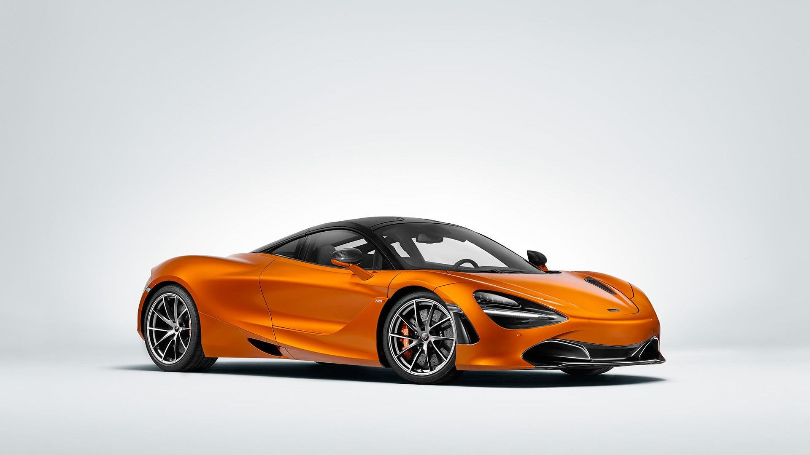
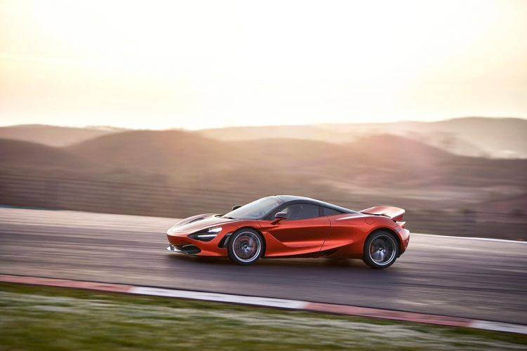
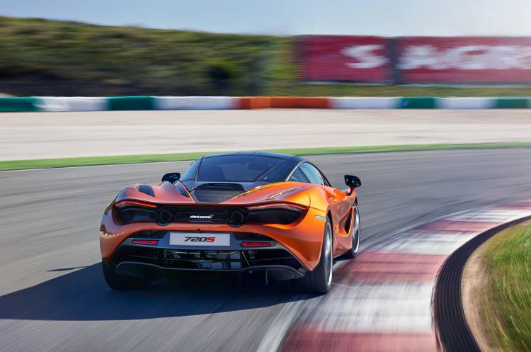
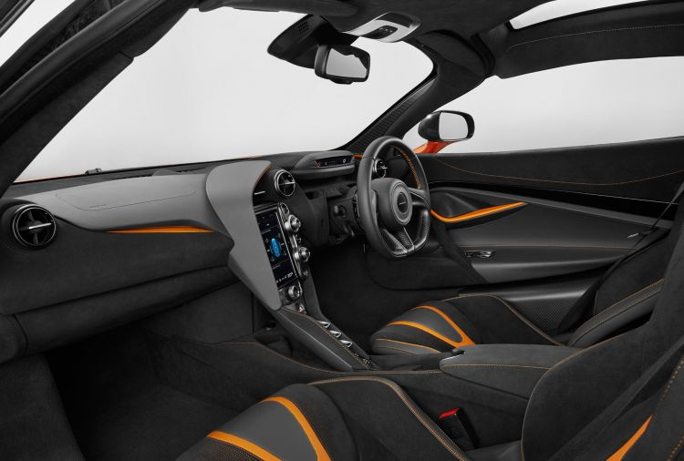

Mclaren 720s

- Características
- Diseño Exterior
- Diseño interior
- Motor
Características
El McLaren 720S es un superdeportivo, fabricado por McLaren desde 2018. Inaugura la segunda generación de la gama Super Series de McLaren Automotive, haciendo efectivo el relevo generacional del McLaren MP4-12C, que posteriormente se conoció como McLaren 12C -a secas- y que fue actualizado más adelante para conocerse como McLaren 650S. El McLaren 720S es un deportivo completamente nuevo, con una nueva plataforma e importantes mejoras aerodinámicas y tecnológicas con respecto a sus predecesores. Se trata de la gama más deportiva de McLaren Automotive, con permiso de un McLaren P1 que se produjo en series limitadas y de un nuevo superdeportivo, aún más potente y exclusivo, que ha sido anunciado como el sucesor del McLaren F1.
Entre los deportivosbiplaza de motor central que aspiran a rivalizar con el McLaren 720S coupé nos encontramos con el Lamborghini Huracán y el Ferrari F8 Tributo. Y un producto que muy probablemente pueda medirse de tú a tú, e incluso vencer en ciertos aspectos, a sus rivales de Ferrari y Lamborghini.

Diseño Exterior
En cuanto a las características más destacables del McLaren 720S no podemos olvidarnos de su aerodinámica. McLaren ha trabajado mucho para conseguir un deportivo con un rendimiento aerodinámico excelente y también para refrigerar su motor central - situado inmediatamente detrás del habitáculo. Así las cosas,el McLaren 720S prescinde de entradas de aire en las aletas traseras, pero sí ha conseguido refrigerar el motor con unas entradas de aire que se basan en unos canales por los que fluye el aire hasta la trasera.
McLaren 720S supone también el estreno de una nueva filosofía estética más trabajada, pero a la vez minimalista que marcaría también el desarrollo de otros modelos que llegarían posteriormente al cátalogo de los de Woking.

Diseño interior
A bordo, es el McLaren más tecnológico que hayamos visto hasta ahora, con una avanzada instrumentación móvil, que pivota para ajustarse a las necesidades de la conducción en carretera y circuito, de manera que el McLaren 720S muestra siempre y únicamente la información necesaria. Ver vídeo de la instrumentación del McLaren 720S. La estética es muy deportiva, omitiendo elementos superfluos y utilizando materiales como la Álcantara y el cuero en un interior en el que todo está centrado en disfrutar de la conducción.

Motor
El motor del McLaren 720S, como en su predecesor,sigue siendo un V8 twin-turbo de 4.0 litros que en esta ocasión alcanza ya los 720 CV de potencia. De ahí viene precisamente su nombre. Más allá de su potencia, resulta especialmente interesante que nos fijemos en que sobre la báscula solo marcará 1.283 kilogramos, de manera que la relación entre potencia y peso es ciertamente muy favorable. En cuanto a sus prestaciones, acelera de 0 a 100 km/h en solo 2,9 segundos. En cuanto al resto de prestaciones declaradas, el McLaren 720S completa el 0 a 200 km/h en 7,8 segundos y alcanza una punta de 341 km/h. Respecto a su frenada, es capaz de detenerse por completo desde los 200 km/h en 4,6 segundos y cubriendo 117 metros.